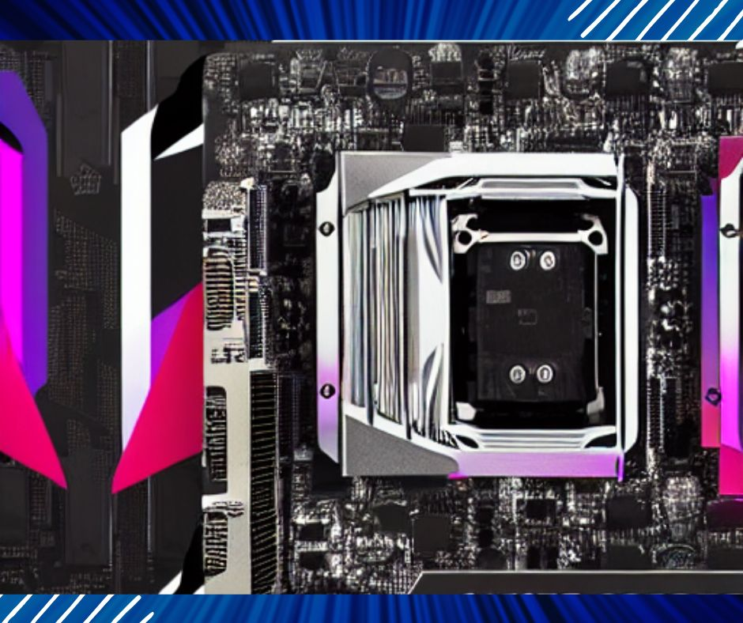

The number of graphics cards that a motherboard can take depends on the number and size of the PCI-Express slots on the motherboard, as well as the wattage of the power supply unit (PSU) and any relevant BIOS settings. Most motherboards have at least one or two PCI-Express slots, but some have more. The size of the PCI-Express slots is also important, as some graphics cards are longer or wider than others. The wattage of the PSU is important because installing multiple graphics cards can be demanding on the power supply. In general, most motherboards can support at least two graphics cards, although this can vary depending on the specific motherboard and graphics cards you’re using.
Do motherboards have GPU limits?
In general, most motherboards have some limitations on the number and type of graphics cards they can support. These limitations are usually determined by the number and size of the PCI-Express slots, as well as the wattage of the power supply unit (PSU) and any relevant BIOS settings. For example, a motherboard with two PCI-Express x16 slots (the most common type of PCI-Express slot) might be able to support two graphics cards, but a motherboard with only one PCI-Express x16 slot would only be able to support one graphics card. The size of the graphics cards is also important, as some graphics cards are longer or wider than others, and might not fit in certain PCI-Express slots.
Can a motherboard limit CPU GPU?
A motherboard does not directly limit the performance of a CPU or GPU. However, the motherboard’s features and capabilities can indirectly affect the performance of these components. For example, a motherboard with a slower PCI-Express bus speed might limit the performance of a graphics card, or a motherboard with a slower RAM speed might limit the performance of a CPU. The motherboard’s BIOS settings can also affect the performance of these components.
How do you determine how many GPUs a motherboard can support?
To determine how many graphics cards a motherboard can support, you’ll need to check the number and size of the PCI-Express slots, as well as the wattage of the power supply unit (PSU) and any relevant BIOS settings. Here are the steps you can follow:
- Check the number of PCI-Express slots on the motherboard: Most motherboards have at least one or two PCI-Express slots, but some have more. The number of PCI-Express slots will determine how many graphics cards you can install.
- Check the size of the PCI-Express slots: Some graphics cards are longer or wider than others, so it’s important to make sure the PCI-Express slots on your motherboard are large enough to accommodate your graphics cards. The size of the PCI-Express slots is usually indicated by a number (e.g., PCI-Express x16, PCI-Express x8, etc.), with larger numbers indicating larger slots.
- Check the wattage of the power supply unit (PSU): Installing multiple graphics cards can be demanding on the PSU, so you’ll need to make sure you have a PSU with enough wattage to support all of your graphics cards. The wattage of the PSU is usually indicated on the side or bottom of the PSU itself.
- Check the motherboard’s BIOS settings: Some motherboards have BIOS settings that allow you to enable or disable certain PCI-Express slots, or to set them to run at different speeds. This can affect how many graphics cards you can use on your motherboard.
Related Article: What Does the Orange Light On Motherboard Mean?
How many GPUs can windows detect?
Windows can detect and use multiple graphics cards, as long as they are compatible with the motherboard and have the necessary drivers installed. The exact number of GPUs that Windows can detect will depend on the specific version of Windows you are using and the hardware configuration of your PC.
In general, Windows can detect and use up to four graphics cards, depending on the specific motherboard and graphics cards you are using. Some motherboards and graphics cards may support more than four GPUs, but this can be more complex to set up and may require additional hardware and software.
How do I run multiple GPUs on one motherboard?
To run multiple graphics cards (GPUs) on one motherboard, you’ll need to follow these steps:
- Check your motherboard’s specifications: Make sure your motherboard has enough PCI-Express slots to support the number of graphics cards you want to use. You’ll also need to check the size and speed of the PCI-Express slots to ensure that they are compatible with your graphics cards.
- Check your power supply unit (PSU): Installing multiple graphics cards can be demanding on the PSU, so you’ll need to make sure you have a PSU with enough wattage to support all of your graphics cards. You’ll also need to check that the PSU has the necessary power connectors for your graphics cards.
- Install the graphics cards: Follow the manufacturer’s instructions to install the graphics cards in the PCI-Express slots on your motherboard. Make sure the graphics cards are properly seated and secured in the slots.
- Install the necessary drivers: Install the drivers for your graphics cards, following the manufacturer’s instructions. Make sure to install the latest drivers to ensure the best performance and compatibility.
- Configure your software: Some software programs may need to be configured to use multiple GPUs. For example, some games may need to be set to use multiple GPUs in the graphics options menu. Consult the software’s documentation for instructions on how to configure multiple GPUs.
Keep in mind that running multiple GPUs can be more complex and may require additional hardware and software. You may need to experiment with different configurations to find the optimal setup for your specific hardware and software.
Why do conventional motherboards support only one GPU whereas mining motherboards support multiple GPUs?
Conventional motherboards are designed to support a single graphics card (GPU) for general-purpose computing tasks, such as running the operating system, playing games, and running applications. These motherboards typically have one or two PCI-Express slots, which are used to install the graphics card.
On the other hand, mining motherboards are specifically designed to support multiple graphics cards for the purpose of cryptocurrency mining. These motherboards typically have more PCI-Express slots than conventional motherboards, allowing them to support multiple graphics cards. In addition, mining motherboards may have other features that are optimized for cryptocurrency mining, such as high-wattage power connectors and BIOS settings that allow for more control over the graphics cards.
There are a few reasons why mining motherboards are designed to support multiple graphics cards:
- Increased mining power: By using multiple graphics cards, mining motherboards can provide more mining power and potentially earn more cryptocurrency.
- Better efficiency: Using multiple graphics cards can be more efficient than using a single graphics card, as each graphics card can work on a different part of the mining process.
- Easy expansion: Mining motherboards with multiple PCI-Express slots make it easy to add more graphics cards to the system as needed, allowing for easy expansion of the mining operation.
Overall, the main difference between conventional motherboards and mining motherboards is the number of PCI-Express slots and the features that are optimized for cryptocurrency mining. Conventional motherboards are designed for general-purpose computing tasks and typically support only one graphics card, while mining motherboards are designed specifically for cryptocurrency mining and support multiple graphics cards.
Related Article: Best Motherboards for AMD Ryzen 7 5700X
Can you have two different GPUs installed on a single motherboard, but only use one of them at a time?
Yes, it is possible to have two different graphics cards (GPUs) installed on a single motherboard, but only use one of them at a time. This is known as the “multi-GPU” configuration, and it allows you to switch between the two GPUs depending on your needs.
To use two different GPUs on a single motherboard, you’ll need to ensure that the motherboard has at least two PCI-Express slots and that the GPUs are compatible with each other and the motherboard. You’ll also need to install the appropriate drivers for the GPUs and configure the system to use the desired GPU.
There are a few different ways to use two different GPUs on a single motherboard:
- Alternate rendering: In this configuration, one GPU is used for rendering the graphics for the display, while the other GPU is used for other tasks, such as running the operating system or running applications. This allows you to switch between the two GPUs depending on the specific task you are working on.
- Load balancing: In this configuration, the two GPUs work together to distribute the workload between them, allowing for better performance and efficiency. This is commonly used in high-performance computing applications, such as scientific simulations and video rendering.
- Crossfire or SLI: These technologies allow you to use two or more GPUs together to improve performance in games and other graphics-intensive applications.
Overall, using two different GPUs on a single motherboard can provide additional performance and flexibility, depending on your specific needs. However, it can also be complex to set up and may require additional hardware and software. Be sure to research and compare different options to find the configuration that is best suited for your specific hardware and software.
Can you mine cryptocurrencies to multiple wallets by using only one motherboard and multiple GPUs?
Yes, it is possible to mine cryptocurrencies to multiple wallets using a single motherboard and multiple graphics cards (GPUs). In fact, this is a common configuration for cryptocurrency mining operations.
To do this, you’ll need to set up a mining software program that is capable of mining to multiple wallets. Many mining software programs have this feature, allowing you to specify different wallets for different cryptocurrencies or mining pools.
Once you have set up your mining software to mine to multiple wallets, you can then use your multiple graphics cards to mine multiple cryptocurrencies simultaneously. The mining software will distribute the mining work among the graphics cards and direct the mined cryptocurrency to the appropriate wallets.
Keep in mind that mining multiple cryptocurrencies simultaneously can be complex and may require additional hardware and software. You may need to experiment with different configurations and settings to find the optimal setup for your specific hardware and software.
Do you need a special GPU and motherboard to mine cryptocurrency?
In general, you do not need a special graphics card (GPU) or motherboard to mine cryptocurrency. Any GPU that is compatible with your motherboard and has the necessary drivers installed can be used for mining.
However, there are a few factors to consider when choosing a GPU and motherboard for cryptocurrency mining:
- Hash rate: The hash rate of a GPU refers to its mining performance, or how quickly it can solve the mathematical problems needed to mine cryptocurrency. In general, GPUs with higher hash rates will be more effective at mining cryptocurrency.
- Power consumption: Cryptocurrency mining can be demanding on the GPU and the power supply unit (PSU), so it’s important to choose a GPU and motherboard that have power-efficient designs. This can help reduce your electricity costs and improve the profitability of your mining operation.
- Price: The price of a GPU and motherboard can also be a factor to consider when choosing hardware for cryptocurrency mining. In general, more expensive GPUs and motherboards may offer better performance, but they may also have a higher upfront cost.
Overall, the best GPU and motherboard for cryptocurrency mining will depend on your specific needs and budget. It’s a good idea to research and compare different options to find the hardware that is best suited for your mining operation.
Frequently Asked Questions
Can a motherboard not support a GPU?
Yes, it is possible for a motherboard to not support a specific graphics card (GPU). This can happen for a few reasons:
- PCI-Express slot size and speed: The graphics card must be compatible with the size and speed of the PCI-Express slot on the motherboard. For example, a PCI-Express x16 graphics card will not fit in a PCI-Express x8 slot, and a PCI-Express 3.0 graphics card may not work properly in a PCI-Express 2.0 slot.
- Power requirements: The graphics card must be compatible with the wattage of the power supply unit (PSU) and any power connectors on the motherboard. For example, a graphics card with a high-power draw may not be compatible with a PSU that doesn’t have enough wattage or the right types of power connectors.
- BIOS compatibility: Some graphics cards may not be compatible with certain motherboard BIOS versions or settings. This can cause issues when trying to install or use the graphics card.
To determine whether a specific graphics card is compatible with your motherboard, you’ll need to check the specifications of the graphics card and the motherboard and ensure that they are compatible with each other. You may also need to refer to the documentation for your motherboard and graphics card, or contact the manufacturer for more information. If you find that a specific graphics card is not compatible with your motherboard, you may need to consider using a different graphics card or motherboard.
Can an old GPU be incompatible with newer motherboards?
It is possible for an old graphics card (GPU) to be incompatible with newer motherboards, depending on the specific hardware and software involved. Here are a few factors to consider:
- PCI-Express slot size and speed: The GPU must be compatible with the size and speed of the PCI-Express slot on the motherboard. For example, a PCI-Express x16 GPU will not fit in a PCI-Express x8 slot, and a PCI-Express 3.0 GPU may not work properly in a PCI-Express 2.0 slot.
- Power requirements: The GPU must be compatible with the wattage of the power supply unit (PSU) and any power connectors on the motherboard. For example, a GPU with a high power draw may not be compatible with a PSU that doesn’t have enough wattage or the right types of power connectors.
- BIOS compatibility: Some GPUs may not be compatible with certain motherboard BIOS versions or settings. This can cause issues when trying to install or use the GPU.
- Driver compatibility: The GPU must have drivers that are compatible with the operating system and motherboard. If the GPU is too old, it may not have drivers that are compatible with newer operating systems or motherboards.
To determine whether an old GPU is compatible with a newer motherboard, you’ll need to check the specifications of the GPU and the motherboard and ensure that they are compatible with each other. You may also need to refer to the documentation for the GPU and motherboard or contact the manufacturer for more information.
Can a GPU be bigger than a motherboard and still work?
No, a graphics card (GPU) cannot be physically bigger than a motherboard and still work. The GPU must fit inside the computer case, and it must be installed in a PCI-Express slot on the motherboard. The size of the GPU is determined by the size of the PCI-Express slot on the motherboard, and a GPU that is too big will not fit in the slot or inside the case.
It’s important to choose a GPU and motherboard that are compatible with each other and with the computer case. You’ll need to check the specifications of the GPU and motherboard to ensure that they are compatible with each other, and you’ll also need to make sure that the GPU will fit inside the computer case.
In general, most GPUs are designed to fit in standard-sized computer cases and PCI-Express slots. However, some larger GPUs may require more space or special mounting brackets, and some smaller GPUs may be designed for use in smaller cases or in specialized applications. Be sure to check the specifications of the GPU and motherboard to ensure that they are compatible with each other and with your computer case.
Is it okay to use a cheap motherboard for a high-end GPU?
It is generally okay to use a cheap motherboard with a high-end graphics card (GPU), as long as the motherboard meets the minimum requirements for the GPU and is compatible with it. To determine whether a motherboard is compatible with a specific GPU, you’ll need to check the specifications of the GPU and the motherboard and ensure that they are compatible with each other.
If the motherboard meets the minimum requirements for the GPU and is compatible with it, it should be okay to use the GPU with the motherboard, even if the motherboard is cheap. However, keep in mind that using a cheap motherboard may not provide the best performance or features for the GPU, and it may not be as reliable as a higher-end motherboard. It’s always a good idea to choose a motherboard that is appropriate for the specific hardware and software you are using.
What happens if I pulled the GPU of the motherboard while it was in use?
Removing a graphics card (GPU) from a motherboard while the system is in use can cause problems and potentially cause damage to the hardware. Here are a few potential consequences of removing a GPU from a motherboard while it is in use:
- Data loss: If the GPU is being used to display the operating system or run applications, removing the GPU while the system is in use can cause data loss or corruption. This is because the GPU is responsible for rendering the graphics on the display, and removing it while the system is running can disrupt the flow of data between the GPU and the rest of the system.
- Hardware damage: Removing a GPU from a motherboard while the system is in use can also cause physical damage to the GPU or the motherboard. For example, the GPU may be damaged if it is removed while the system is still powered on, or the motherboard may be damaged if the GPU is removed improperly.
- System crash: If the GPU is being used to run the operating system or applications, removing the GPU while the system is in use can cause the system to crash or become unstable. This can result in the loss of any unsaved data and may require a restart of the system.
In general, it is best to avoid removing a GPU from a motherboard while the system is in use. If you need to remove the GPU for any reason, it is recommended to shut down the system first and unplug it from the power source to avoid any potential problems or damage.
Can installing a GPU kill the motherboard?
It is generally not likely that installing a graphics card (GPU) would cause damage to a motherboard. However, there are a few factors to consider when installing a GPU to ensure that it is done safely and correctly:
- Compatibility: It is important to ensure that the GPU is compatible with the motherboard and the rest of the system. This includes checking the PCI-Express slot size and speed, the power requirements of the GPU, and the BIOS compatibility. If the GPU is not compatible with the motherboard, it may not work properly or may cause problems with the system.
- Proper installation: It is important to follow the manufacturer’s instructions and use caution when installing the GPU. This includes handling the GPU carefully to avoid damaging it, ensuring that the GPU is properly seated in the PCI-Express slot, and connecting any necessary power cables. Improper installation of the GPU can cause problems with the system or damage to the GPU or motherboard.
- Power supply: It is important to ensure that the power supply unit (PSU) has enough wattage and the right types of power connectors to support the GPU. If the PSU is not sufficient, it may not provide enough power to the GPU, which can cause problems with the system or damage to the GPU or motherboard.
Overall, it is not likely that installing a GPU would cause damage to a motherboard, as long as the GPU is compatible with the motherboard and is installed properly. However, it is always a good idea to follow the manufacturer’s instructions and use caution when installing any hardware to avoid any potential problems or damage.